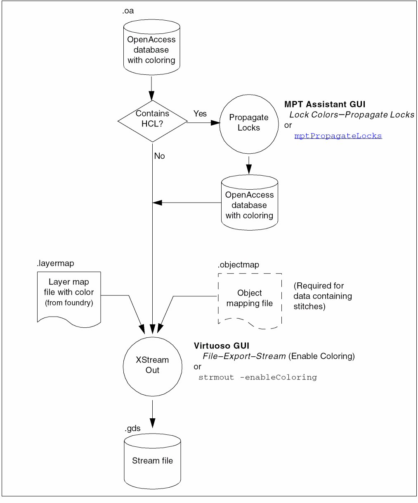

Export Stream Files with Coloring
A layer map is required that includes color mapping specified by the foundry. For more information, refer to Layer Map File Enhancements for Colored Data.
If any shapes in your design are color locked using hierarchical color locking (HCL), follow the procedure in Propagating Locks to ensure that the HCL data is included during stream out. For more information on HCL, refer to Hierarchical Color Locking.
If the OpenAccess database contains stitches, an object mapping file is also required, as described in Methods to Fix Multiple Patterning Violations.
The data is translated using the Virtuoso GUI (File – Export – Stream in the CIW), or by using strmout from the Textual User Interface.
To stream out color, "Enable Coloring" must be enabled in the XStream Out GUI or "-enableColoring" must be included in the
strmout command, before the layer map is loaded. Your layer map must include the photo mask color and color state columns.
During stream out, shapes for the pre-colored nets are locked to their current color, based on the spacing constraints and the pre-coloring method.

Return to top